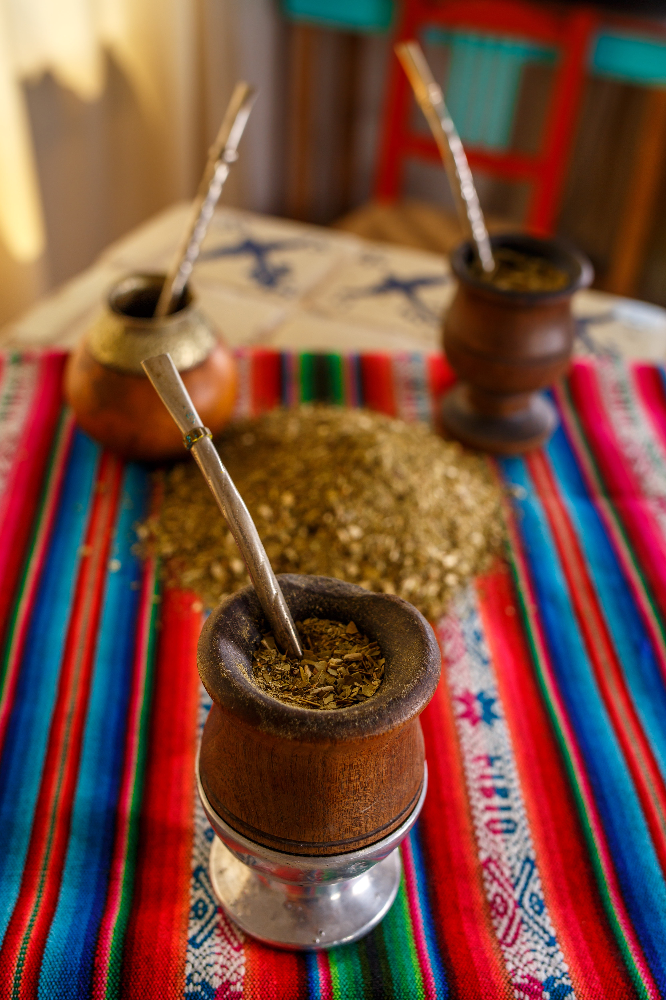
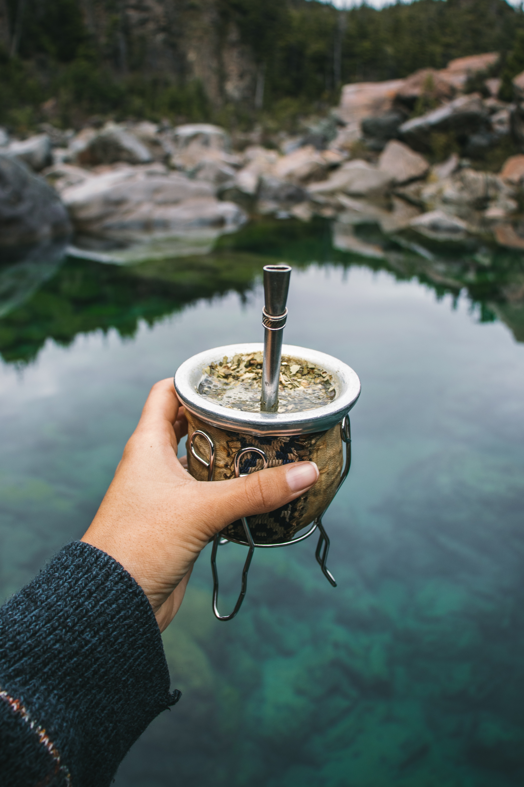
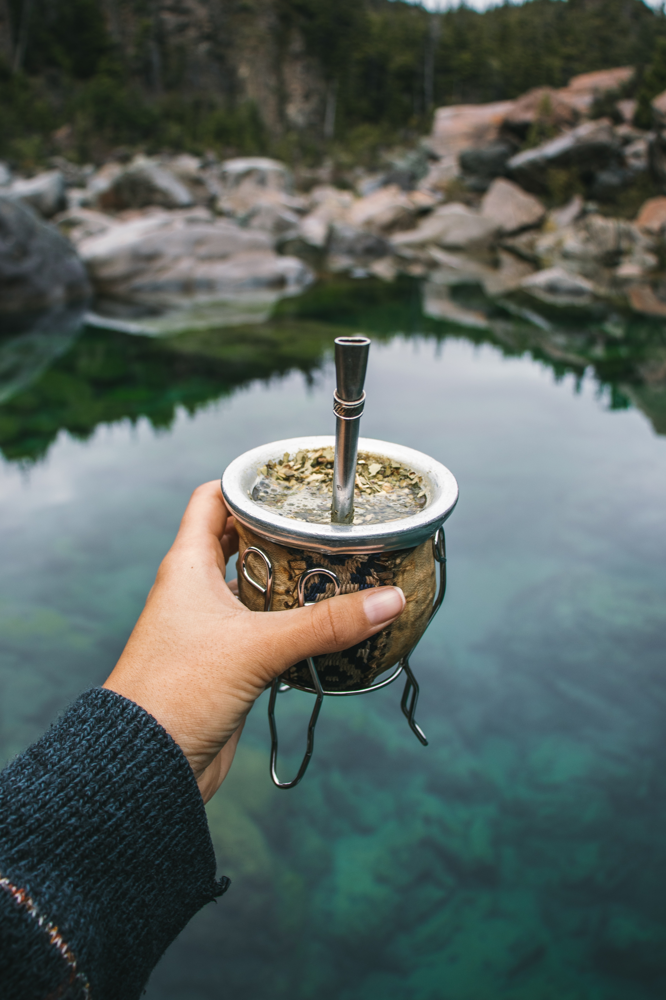

Yerba Mate


 

The best drink in the world
the Goddesses of the Moon and the
Cloud came to visit the Earth one
day. An old man saved them from a
yaguareté that was going to attack
them. The goddesses gave him a new
kind of plant, from which he could
prepare a "drink of friendship" as
compensation for his actions.